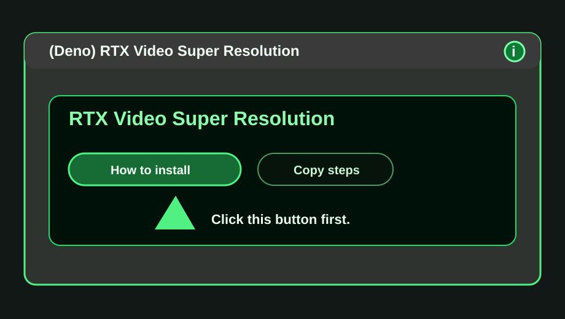

Step1

Open the install guide from the node
In ComfyUI, add (Deno) RTX Video Super Resolution. If NVIDIA RTX VFX is missing, click How to install.
Do thisClick
How to install.Check thisThis guide page opens in your browser.